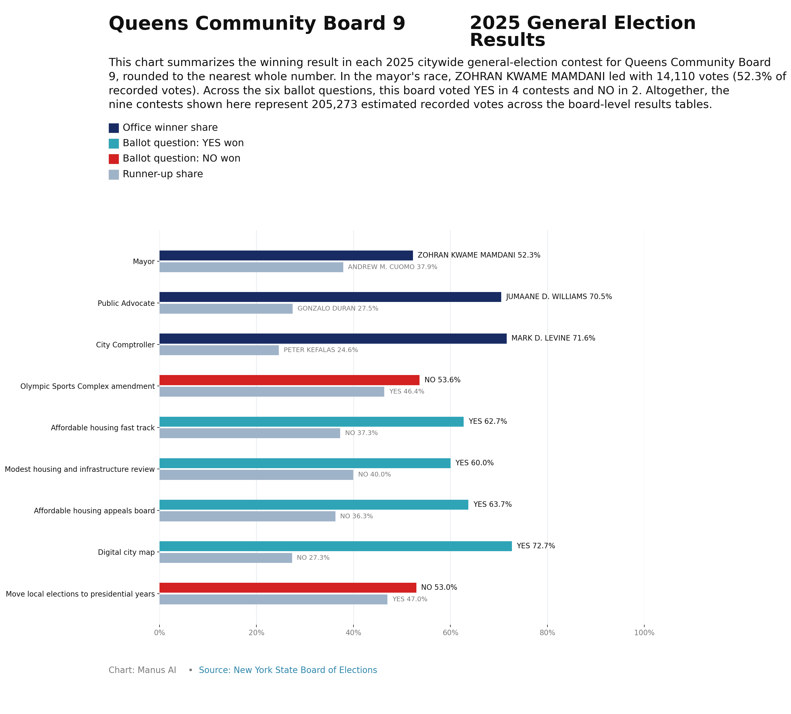

CB6 & Beyond

In 2023, Kew Gardens/Woodhaven was the city’s 36th largest neighborhood by population out of 59 neighborhoods. It has the 20th largest proportion of nonwhite population, the 14th highest median income, and the 25th most expensive rents of the city’s 59 neighborhoods. From 2010 to 2024, the neighborhood added 806 new housing units, 546 units of which were market rate and 260 units of which were income restricted. In 2023, there were an estimated 133,830 people in Kew Gardens/Woodhaven, of which 25.9% identified as Asian, 4.9% identified as Black, 37.9% identified as Hispanic, and 19.3% identified as White. Median household income in 2023 was $103,090, about 30% more than citywide median household income ($79,480). The poverty rate in Kew Gardens/Woodhaven was 11.7% in 2023 compared to 18.2% citywide. Real median gross rent in Kew Gardens/Woodhaven increased from $1,680 in 2006 to $1,930 in 2023. This represents a 14.9% increase over the same period. The overall rental vacancy rate in Kew Gardens/Woodhaven was 2.7% in 2023. As of 2023, the change in median household income outpaced the change in median gross rent by 29.1 percentage points. In 2023, 30.9% of renter households in Kew Gardens/Woodhaven were severely rent burdened (spent more than 50% of household income on rent). 75.4% of the rental units were affordable at 80% Area Median Income, 11 percentage points higher than the share in 2010. In 2023, the homeownership rate in Kew Gardens/Woodhaven was 49.9%, which is higher than the citywide share of 32.5%. The homeownership rate in the neighborhood has increased by 6.6 percentage points since 2010. In 2023, the home purchase loan rate was 16.7 per 1,000 properties (owner-occupied 1-4 family buildings, condominiums, or cooperative apartments) and the refinance loan rate was 3.6 per 1,000 properties in the neighborhood. Out of all the first-time home purchase loans and refinance loans in Kew Gardens/Woodhaven, 4.4% and 8.5% were high cost loans, respectively. 95 properties had a filing of mortgage foreclosure in Kew Gardens/Woodhaven in 2022. There were 4.8 mortgage foreclosure actions initiated per 1,000 1-4 family properties and condominium units. Between 2010 and 2024, 806 units in 4+ unit buildings were built in Kew Gardens/Woodhaven. 68% were market rate, compared to 24% that were income-targeted. We use data from a variety of sources to count the number of income-restricted units targeted to households earning between 80% and 165% of AMI. However, due to restricted availability of granular data our calculations of income-restricted units should be read as conservative estimates. Read more about our methodology in thetechnical appendixof the2021 Focus Report From 2010 and 2024, an estimated 24% units in 4+ unit buildings were built in Kew Gardens/Woodhaven for low-income households (<=80% AMI). The Department of Buildings issued new building permits to 83 residential units in new buildings in Kew Gardens/Woodhaven in 2024, 36 fewer than the number of units authorized in 2023. The Department of Buildings issued new certificates of occupancy to 222 residential units in new buildings in Kew Gardens/Woodhaven in 2024, 72 more than the number of units certified in 2023. None of the rental units were public housing rental units, as of 2024. Kew Gardens/Woodhaven has 17 properties with subsidized units as of 2024 through programs like HUD assistance, Low Income Housing Tax Credits, 421a, and others. 0 properties have subsidies due to expire between 2025 and 2030, 1 property has subsidies due to expire between 2031 and 2040, and 2 properties have subsidies expiring after 2040. For more comprehensive subsidized housing information in New York City, please visit Furman Center’sCoreData.nyc The serious crime rate, including property and violent crime types, was 7.7 serious crimes per 1,000 residents in 2024, compared to 13.6 serious crimes per 1,000 residents citywide.